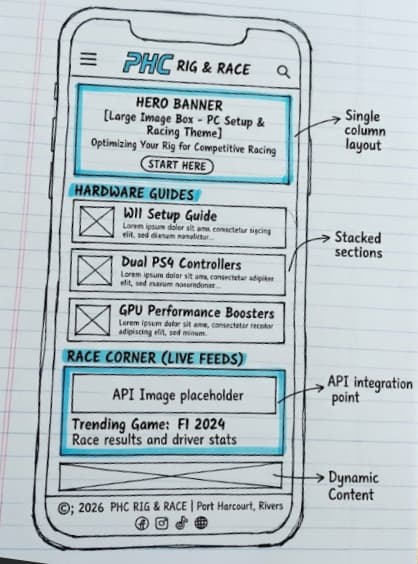
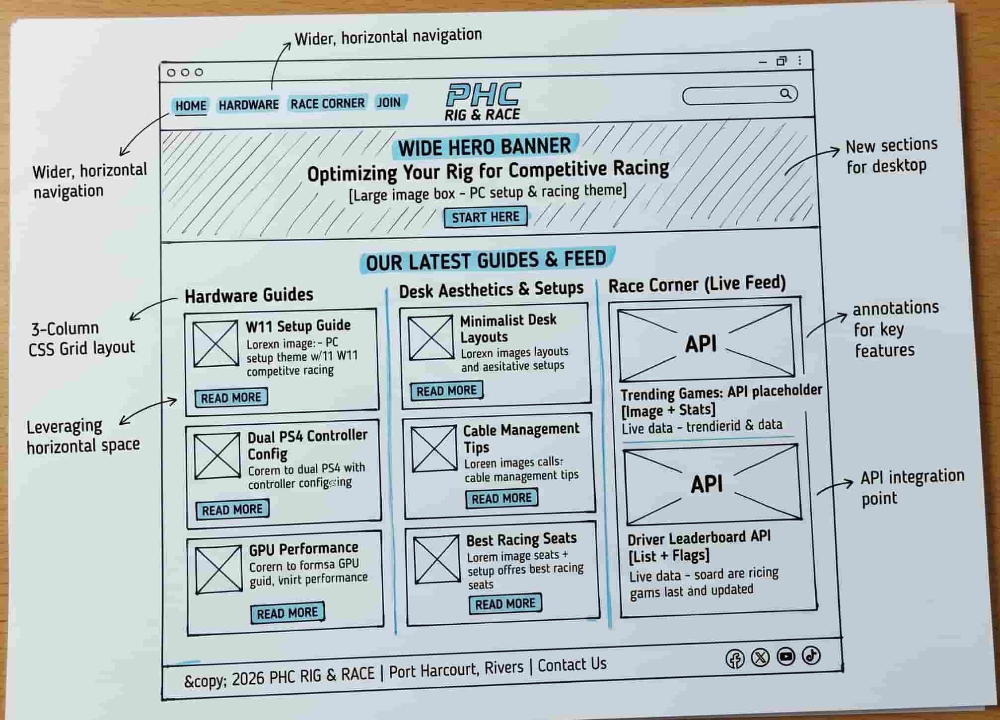

1. Site Name
Name: PHC Rig & Race
Reason: This name directly represents a hub for Port Harcourt PC gaming enthusiasts, with a specific focus on hardware setups ("Rig") and competitive racing titles ("Race"). It is memorable and clearly defines the niche.
Available Domain: phcrigandrace.com.ng
2. Site Purpose
To provide local PC gamers with actionable hardware optimization guides, controller configuration tutorials for racing games on Windows 11, and a community spotlight for clean, professional workspace aesthetics.
3. Scenarios
These questions represent what the target audience is looking for when they visit the site:
- "How do I configure a console controller to work perfectly with PC racing games?"
- "What are the best Windows 11 graphics settings to stop lag in high-speed games?"
- "How can I improve my desk cable management to achieve a minimalist look?"
4. Color Scheme
The site utilizes a "Dark Mode" aesthetic common in tech and gaming interfaces, prioritizing high contrast and neon accents.
| Color | Hex Code | Usage |
|---|---|---|
| Deep Midnight | #111827 | Primary Background color. Provides a sleek, glare-free base. |
| Electric Blue | #3B82F6 | Accent color for links, buttons, and important heading highlights. |
| Ghost White | #F9FAFB | Primary text color for paragraphs and lists to ensure readability against the dark background. |
5. Typography
- Headings: Orbitron. This geometric, sans-serif font gives a futuristic, hardware-focused feel perfect for a gaming site. Used for all h1, h2, and h3 elements.
- Body Text: Roboto. A clean, highly legible sans-serif font used for all paragraphs, lists, and standard text to balance the stylized headings.
6. Wireframes
Below are the structural layouts for the home page across different devices.
Mobile View

Features a hamburger menu, a prominent hero image, and a single-column layout for hardware guides.
Desktop View

Features horizontal navigation, a full-width hero banner, and a 3-column CSS grid displaying the latest tutorials.